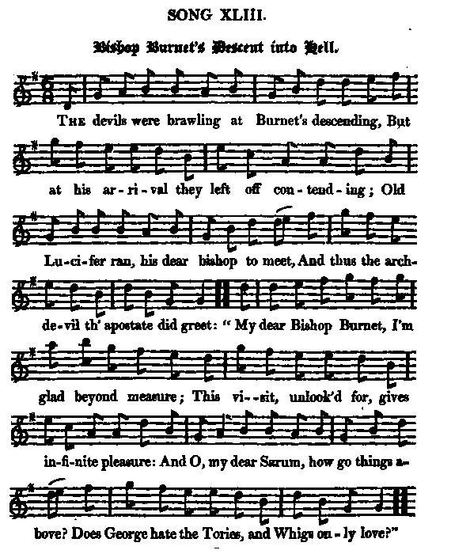
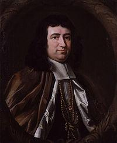

Bishop Burnet's Descent into Hell
La descente aux enfers de l'Evêque Burnet
Author unknown
Tune - Mélodie"Saint Patrick's Day in the Morning"
from Hogg's "Jacobite Reliques" part I, N°43
Sequenced by Christian Souchon

|
The tune is known as
"Saint Patrick's Day in the Morning"
.
The first mention of the tune is that it was one of two tunes (with "The White Cockade" ) played by the pipers of the Irish Brigade attached to the French forces which helped turn the tide of battle against the English troops at the battle of Fontenoy on May 11, 1745. Flood (1906) and O’Neill (1913) believe was probably the last appearance in battle of the Irish Piob mor (war pipes or great pipes, which survived only in Scotland) of which there is any mention. Rutherford's 200 Country Dances, volume 1, 1756, contains the first country dance printing of the tune, which also appears in English collections as a jig by the name "Barbary Bell." Source "The Fiddler's Companion" (cf. Links). For a list of other "Whigs in hell" songs, click here. |
Le titre de la mélodie est
"Le matin de la Saint Patrick"
.
La première fois qu'elle est mentionnée, on indique que c'est, avec la "Cocarde Blanche" , l'un des deux chants joués par les sonneurs de la Brigade Irlandaise de l'armée française qui contribua à retourner la situation et à remporter sur les Anglais la bataille de Fontenoy le 11 mai 1745. Flood (1906) et O'Neil (1913) pensent que c'est la dernière fois qu'on mentionne l'apparition sur un champ de bataille du "Piob mor" irlandais ( cornemuse de combat ou grande cornemuse, qui ne survécut qu'en Ecosse). Le recueil de Rutherford, "200 contredanses, volume I, 1756, contient la première version imprimée (contredanse) de cette mélodie, laquelle figure aussi sous forme de gigue dans des recueils anglais sous le titre "La cloche de Baraby". Source "The Fiddler's Companion" (cf. liens). Autres chants de "Whigs en enfer" : cliquer ici. |

|
BISHOP BURNET'S DESCENT INTO HELL
1. The devils were brawling at Burnet's descending, [1] But at his arrival they left off contending; Old Lucifer ran, his dear bishop to meet, And thus the arch-devil th'apostate did greet: " My dear Bishop Burnet, I'm glad beyond measure; This visit unlooked for, gives infinite pleasure: And O, my dear Sarum, [4] how go things above? Does George hate the Tories, and Whigs only love?" 2. Was your highness in propria persona to reign, You could not more justly your empire maintain." And how does Ben Hoadley?" [2] " Oh! He's very well: A truer blue Whig you have not in hell. Hugh Peters [3] is making a sneaker within, For Luther, Buchanan, John Knox, and Calvin ; And when they have toss'd off a brace of full bowls, You'll swear you ne'er met with honester souls." 3. " This night we'll carouse, in spite of all pain: " Go, Cromwell, you dog, King William unchain, " And tell him, his Gilly is lately come down, " Who has just left his mitre as he left his crown. " Whose lives, till they died, in our service were spent; " They only come hither who never repent. " Let heralds aloud then our victories tell; " Let George reign for ever!" "Amen!" cried all hell. Source: "The Jacobite Relics of Scotland, being the Songs, Airs and Legends of the Adherents to the House of Stuart" collected by James Hogg, published in Edinburgh by William Blackwood in 1819. |
LA DESCENTE AUX ENFERS DE L'EVEQUE BURNET
1. L'enfer se bagarre quand, sans crier gare, Burnet [1] se présente: fini le combat. Lucifer s'empresse d'accueillir l'évêque. Le grand archi-diable dit à l'apostat: "Burnet, mon cher maître, de te voir paraître, Remplit tout mon être d'un plaisir inouï. Sarum, [4] le roi Georges veut-il qu'on égorge Toujours les Tories pour mieux complaire aux Whigs? 2. "Le Diable en personne fût-il sur le trône, Qu'il ne saurait faire mieux valoir vos droits." - Et comment se porte Ben Hoadley? [2] - La sorte De Whigs que vos portes ne renferment pas. Hugh Peters [3] cafarde, mais aussi moucharde Pour Luther, Buchanan, John Knox et Calvin, Et si l'on en jette de pleines cuvettes, De gens plus honnêtes, pour sûr il n'est point. - 3. - Qu'on fasse bombance, malgré les souffrances! Cromwell, vile engeance, détache Willie! (= le roi Guillaume III) Dis-lui que sans mitre, ni chapeau de pitre Cogne à notre vitre son ami Gillie. (=Gilbert Burnet) Ceux qui sans mot dire toujours nous servirent Ni se repentirent, seuls ici parviennent. Et qu'à pleine gorge l'on chante l'éloge De ce bon roi Georges!" L'enfer dit "Amen!" (Trad. Christian Souchon(c)2009) |
|
[1] "It is not easy to conceive what made the Jacobite party so utterly to detest
Bishop Burnet
, who was always a moderate man, and advised the Stuarts to moderate measures, and never in his life took any very decided part against the adherents of the abdicated family. It appears they considered him as a time-serving hypocrite. Probably it was after the publication of his Memoirs that all these bitter jeux-d'esprit were vented against him; for it was always considered by the Jacobites as an unfair representation of their party that he gave in that work. The following humorous parody of his [] epitaph is copied from a miscellany of that age.
Beneath There lies, against his own wishes, A Man at last in Peace. He was master of a cunning, various Wit, Agreeable to his own Country. Great was He in Divinity, in Fable greater, In Politics (if you'll believe himself) greatest. So faithful a lover of Truth, That it equally appears in his life, And Writings. A violent, mighty, unwearied Preacher: Many have had purer Doctrine, No one stronger Sides and Lungs. So averse to Rome in all points, That he almost approached Geneva. He died, to the universal grief of the Dissenters, On the Calends of March. [2] "Ben Hoadly is my Lord Sunderland." (Hogg is here mistaken: Benjamin Hoadly 1676- 1761 was a bishop who initiated the famous Bangorian Controversy on the "Nature of the Kingdom of God" in asserting that the Eucharist was purely a commemorative act without divine intervention. He had early participated in controversy, advocating conformity of the Scottish and English churches for the sake of union, thus finding favour with the Whig party. He also battled with Tory leader Atterbury on the subject of passive obedience of divines. When George I succeeded to the Throne he became chaplain to the King. Charles Spencer, 3rd Earl of Sunderland led a ministry with Viscount Stanhope in 1717-1718.) Source: Wikipedia [3] "The rest of the characters are all well known, save Hugh Peters , a mad fanatical preacher in the days of Cromwell, and one of his chaplains. He was highly instrumental in inflaming the people, and impelling them to regicide. He was condemned and executed after the Restoration .and the following is part of his funeral sermon. "... He died not without associates to accompany him to his last rest; for, as I am informed, on the very night he departed, departed also a dear brother and sister of ours, the hangman and Moll Cut-purse." Source: Hogg in "Jacobite Relics". [4] Sarum : Burnet's nickname was the "Hector of Sarum" ("Sarum", Lat. for "Salisbury") |
[1] On ne sait trop pourquoi le parti Jacobite détestait à ce point
l'évêque Burnet
. Il fut toujours un homme modéré qui prêcha la modération aux Stuarts et ne s'engagea jamais de façon nette contre les membres de la dynastie déchue. Il semble qu'ils le considéraient comme un hypocrite opportuniste. C'est probablement après la publication de ses Mémoires qu'on fit circuler tous ces mots d'esprit acerbes, car les Jacobites considéraient qu'ils donnaient de leur parti une image injustement déformée. La parodie humoristique d'épitaphe qu'on va lire est reproduite de miscellanées de l'époque.
"Ci-gît, A son corps défendant, Un homme, enfin tranquille. Il était maître d'un art varié et subtil, Très prisé dans son pays. Grande était sa science des choses divines, Sa science des Fables plus grande encore. Mais à l'écouter, c'est surtout en politique qu'il excellait. Il aimait tant la vérité Que, dans sa vie autant que dans ses écrits, Ce fut un prêcheur impénitent, violent et puissant. D'autres ont pu avoir une doctrine plus pure, Aucun n'a eu ses flancs et ses poumons. Rome fut sa bête noire au point Qu'il devint presque Genevois. Il mourut, au grand dam de tous les querelleux, Aux calendes de mars. "[2] Ben Hoadly est Lord Sutherland." (Hogg se trompe: Benjamin Hoadly, 1676 - 1761, est l'évêque qui est à l'origine de la fameuse controverse de Bangor sur la "Nature du Royaume de Dieu", pour avoir affirmé le caractère purement commémoratif, exempt d'intervention divine, de l'eucharistie. Ce n'était pas sa première controverse: tout jeune, il avait défendu l'alignement de l'Eglise d'Ecosse sur celle d'Angleterre au nom de l'union, ce qui lui valut les faveurs du parti Whig. Il débattit aussi avec le chef Tory Atterbury à propos de l'"obéissance passive" demandée au clergé. Quand Georges I. accéda au trône, il devint Chapelain du roi. Charles Spencer, 3ème Comte de Sunderland dirigea un cabinet ministériel avec le Vicomte Stanhope en 1717-1718.) Source: Wikipedia [3] "Les autres personnages sont connus de tous, sauf Hugh Peters , un prédicateur fanatique du temps de Cromwell dont il fut l'un des chapelains. Il contribua personnellement à exciter la populace et à la pousser au régicide. Il fut condamné et exécuté après la restauration. Les mots qui suivent sont extraits de l'oraison funèbre qui fut prononcée: "...Il ne mourut pas sans sympathisants pour l'accompagner dans le repos éternel: On me dit en effet, que le jour de sa mort, cessèrent également de vivre, un cher frère et une chère sœur pour nous tous: le bourreau et Mélanie Coupe-Bourse." Source: Hogg in "Jacobite Relics". [4] Sarum : le surnom de Burnet était l'"Hector de Sarum" ("Sarum" étant le nom latin de Salisbury) |
|
|
|
|
 Gilbert Burnet (1643-1715) was born in Edinburgh. He entered Marischal College in Aberdeen at the age of nine, and five years later graduated M.A. Just before Episcopal government was re-established in Scotland, he became a probationer for the Scottish ministry, in 1661. His decision to accept Episcopal orders led to difficulties with his family, who held rigid Presbyterian views. In 1669 he was named to the chair of Divinity at the university of Glasgow until he moved to London in 1674, where he took an active part in the controversies of the time as a supporter of the Whigs. In 1679 he published a "History of the Reformation of the Church of England" as a rebuttal of Nicholas Sander's book on "the Origin of the Anglican Schism" completed by other two volumes in 1682 and 1714. This work was to become a standard reference in the field and earned him great literary reputation.In 1685 he travelled through Europe and took up residence at the court of William of Orange and Princess Mary at The Hague and kept in contact with them ever after. This infuriated King James who accused him of corresponding with people convicted of high treason in Scotland. He translated William's Declaration which was to be distributed in England after his landing. When William's fleet set sail for England in October 1688 Burnet was made William's chaplain. He also was appointed to preach the coronation sermon on 11 April 1689. On Easter 1689 Burnet was consecrated Bishop of Salisbury and three days later was sworn as chancellor of the Order of the Garter. He was out of royal favour in the reign of Queen Anne. He then began his "History of My Own Time" in 1683 (styled "Memoirs" by Hogg), covering the English Civil War and the Commonwealth of England to the Treaty of Utrecht of 1713. |
Gilbert Burnet (1643 - 1715) est né à Edimbourg. Il entra au collège Marischal d'Aberdeen à neuf ans et cinq années plus tard il était bachelier. Juste avant que la hiérarchie épiscopale ne soit réintroduite en Ecosse, il devint novice dans l'Eglise écossaise, en 1661. Sa décision d'accepter d'être ordonné évêque fut très mal accueillie par sa famille qui avait des conceptions presbytériennes strictes. En 1669 il fut nommé à la chaire de théologie de l'université de Glasgow jusqu'à son départ pour Londres en 1674. Là, il prit une part active aux controverses théologiques de cette époque en tant que partisan des Whigs. En 1679 il publia une "Histoire de la Réforme de l'Eglise d'Angleterre" en réplique à l'ouvrage de Nicolas Sander sur l'"Origine du schisme anglican", complétée par deux autres tomes en 1682 et 1714. Cette œuvre devait devenir une référence en la matière et fonda sa réputation d'homme de lettres.
En 1685, il parcourut l'Europe et s'installa à la cour de Guillaume d'Orange et de la Princesse Marie à La Haye. Il resta par la suite toujours en contact avec eux. Ceci irrita au plus haut point le roi Jacques II qui l'accusait en outre d'entretenir une correspondance avec des Ecossais convaincus de haute trahison. C'est Burnet qui traduisit en anglais la déclaration de Guillaume destinée à être publiée en Angleterre après son débarquement. Alors que la flotte de Guillaume faisait voile vers les côtes anglaises en octobre 1688, ce dernier fit de Burnet son chapelain. C'est lui qui fut chargé de prononcer l'homélie lors de la cérémonie de couronnement, le 11 avril 1689. A Pâques 1689, Burnet fut consacré évêque de Salisbury et trois jours plus tard, élevé au grade de chancelier de l'Ordre de la Jarretière. Il tomba en disgrâce sous la Reine Anne. C'est alors qu'il commença, en 1683, son "Histoire de mon temps" (que Hogg appelle ses "Mémoires"), qui couvre la Guerre civile et l'époque du Commonwealth jusqu'au traité d'Utrecht de 1713. |
|
|
|